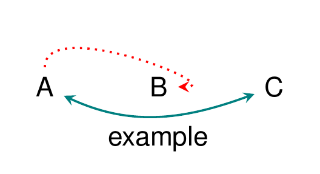

add_edge.RdConnect two nodes using a straight or curved line. By default, edges are
directed (from to to) but undirected or bidirectional arrows are also
possible. The angles at which the edge leaves and enters the nodes, and the
location at which it does so, can be finely tuned. add_curved_edge() is a
shortcut for a (hopefully) reasonably curved edge.
add_edge( dag, from, to, start_position = NULL, end_position = NULL, options = NULL, is_curved = !is.null(curve), curve = NULL, curve_in_degree = NULL, curve_out_degree = NULL, is_double_arrow = FALSE, is_headless = FALSE, annotate = NULL, ... ) add_curved_edge(dag, from, to, options = NULL, curve = "up", ...)
| dag | Object created by |
|---|---|
| from, to | The names (or numeric id) of nodes create by |
| start_position, end_position | The start and end positions of the edge in any manner acceptable to Tikz (e.g., a coordinate in degrees like 30 or a direction like "south west") |
| options | A list of edge options specific to this edge; see |
| is_curved | Logical. Whether the edge should be curved. |
| curve | Direction of the curve, if any: "up" or "down". |
| curve_in_degree, curve_out_degree | Angle in degrees at which the edge leaves and enters the nodes. |
| is_double_arrow, is_headless | Logical. Default is directed arrow; these options can be used to specify headless or two-headed arrows. |
| annotate | Annotation specified with |
| ... | Not currently used. |
The same object of class "dagtex" with an additional edge.
dagtex(edge_options = list(line_type = "dotted", color = "red")) %>% add_many_nodes(c("A", "B", "C")) %>% add_edge("A", "C", curve = "down", is_double_arrow = TRUE, annotate = annotate_edge("example", position = "below"), options = list(color = "teal", line_type = "solid")) %>% add_edge(1, 2, start_position = "north", curve_in_degree = 0, curve_out_degree = 90)